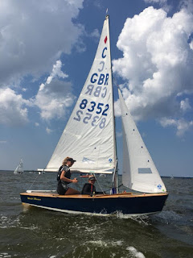
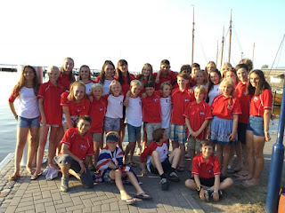
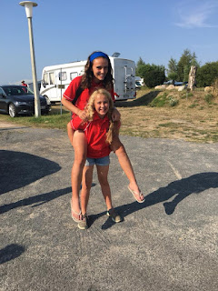
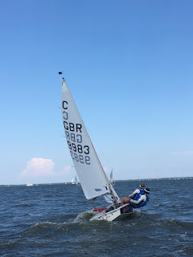
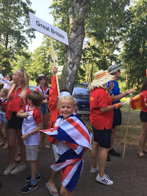

 |
| Master Mariner (Cally & Hetty) |
{kind=link}
The Cadet is a granddaddy of a dinghy. Commissioned by Yachting World magazine from legendary
boat builder Jack Holt in 1947 it was a rapid success in the more family-friendly,
less class-divided world of postwar Britain and soon went international. As a 1950s child learning to sail
in a classic 12’ clinker-built dinghy with plenty of room for Mum or Dad, I
looked with awe and envy at my contemporaries who were sailing Cadets.
The Cadet dinghy has no space
for adults. They are 10’ 6” long with 4’6”
beam but their broad side decks make a
very small central well; neat for the 7-17 year-olds for whom they were
designed, not so appealing to anyone bulkier. Though, as I write this, I begin to wonder
whether, as my generation begins to shrink back towards our more skeletal 80- and 90- year old selves, whether there might be a second chance for those of us
who missed out first time round … pull some of those 3 digit sail
numbers out of retirement, do away with the baffling rainbow-coloured ropes and
relaunch…as the 'Senex', maybe?
It wouldn’t be impossible to find plenty of those
mid-twentieth century dinghies. The oldest currently competing has sail number 735
and, although over 10,000 Cadets have
been built since 1947 -- in GRP as well as plywood -- they possess the capacity to inspire
lasting affection. Rather like children’s first ponies, passed from Pony Club
family to family, many Cadet dinghies change hands privately when the last
child turns 17. I observed an English mother coming up to one of the more
middle-aged dinghies, currently being sailed by two Belgian girls, and giving
its bows a little stroke. ‘We had this one for several years,’ she explained
when she saw me watching, ‘when our children were much younger.’ Cadets can
move across the world. At the end of the Bodstedt event, a container was to be
filled with surplus equipment and outgrown dinghies for donation to Cuba where
the class is in need of additional support.
 |
{kind=link}
Some youngsters have been attending this event since they
were in their pushchairs but for our family it was a first. ‘The Dutch are awesome,’ breathed the older of my
granddaughters a few weeks earlier, when our horizons were still bounded by the
North Sea and venturing to the Baltic seemed unbelievably exotic. Then I noticed that
previous Cadet World Championships had been held in Bombay, Buenos Aires and
Lake Balaton – to take only the Bs. Cartagena, Cesme, La Coruna; Geelong, Gdynia, Glenelg, Gzycko -- all of them far, far away from Burnham-on-Crouch where the event was held for its first 16 years.
Psychologically I thought it was a shrewd move by RYA
coach Tom Mallendine to take his flock across the Bodstedter bodden on day 4 of
training, to practice their starts against the Australian fleet. I felt a flutter of
nerves as I watched from an attendant RIB: the competitors evidently didn’t.
There was an impressive amount of jockeying and surging as the two nations
pushed one another prematurely over the line in their eagerness to break away. As the event progressed many international friendships were made – to be continued next year – and there
was a general swapping of hats and shirts after the prizegiving. It’s rumoured (by the crews) that – at the
helms’ post event party – there was kissing…
 |
| Hazel & Gwen off the water |
{kind=link}
Because Cadets are a One Design class every
detail must be scrupulously fair and within the agreed parameters. But, because
they are also over seventy years old, available materials and construction techniques have
moved on. I listened to a 14 year old boy’s careful explanation of the pros and
cons of the three different versions of the GRP (foam sandwich) moulds and then
his meditations on whether the extra 2cm on the forestay of the plywood-constructed
dinghies might give them a competitive advantage. His grandfather had built his
(GRP) dinghy for him and it was clear that this 14-year-old was
capable of sailing as thoughtfully and expertly as he spoke. My story-book hero
would have been happy in his company.
My real-life heroine for the fortnight was Hazel, the 14-year-old for whom my older granddaughter was crewing. On Measurement Day all
the dinghies have to be completely stripped down and every single piece of equipment
checked for its conformity to the class standards. In the process Hazel's dinghy Sorcerer’s mast was found to be bent.
 |
| Hazel & Gwen sailing Sorcerer |
{kind=link}
Elsewhere in the camp a long running controversy was getting
its annual airing as the headsails of two of the most modern cadets were called
back for re-measurement due to their slightly fuller cut. These were both on
British boats and my heart sank as I anticipated the nit-picking and protesting that (for me) constitutes the unattractive
side of racing. I mentioned this to one of the most experienced mothers in the
team – one of whose children was crewing on one of the boats under scrutiny. ‘I
really don’t think it matters too much,’ she said. ‘At this stage of the
competition it’s all up to the decisions that the children make out there.’
That was the essence of this event. Parents could hover
helpfully on RIBs ready with snacks, first aid kits and new halyards; the
coaches could hold briefings and de-briefings but at the heart of the action
were 121 individual units of one older and one younger child, dependent on each
other. Not all were harmonious or heroic: occasional helms were heard to snap
at their crews, some crews might have fumbled or been slow. I heard of one
small crew member who was simply unable to stay awake through a long afternoon’s
training session. Nevertheless the
training that Hazel (14) and Sorcerer
were giving Gwen (10) in the World fleet and Cally (about to be 15) with Master Mariner to my other granddaughter
Hetty (9) in the Promos was unique and adult-free. When I heard Hetty say, ‘Cally’s
really good!’ I could also hear her
determination to be equally good herself, one day.
I shall have no more scruples in banishing all fictional
parents or teachers from my stories and sending my young adventurers out to fend
for themselves – with perhaps the most unobtrusive of admiring grandmothers in distantly
respectful attendance. |
| Hetty, representing her country |
{kind=link}